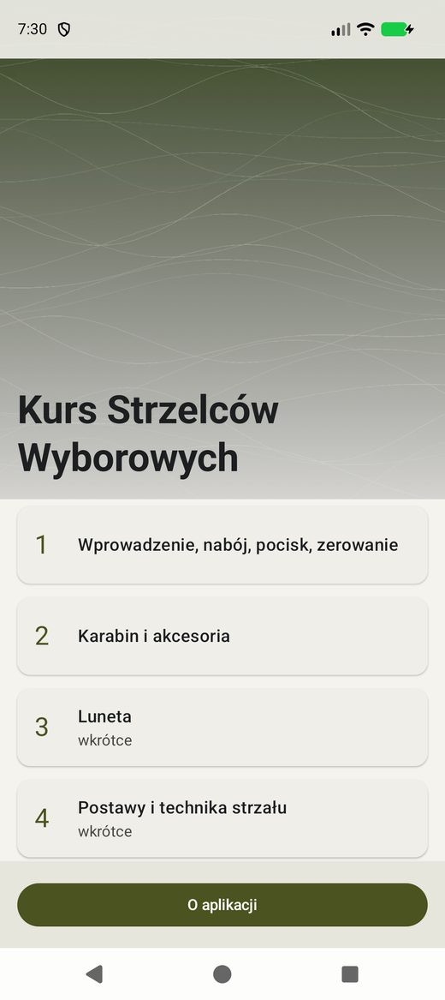

Kurs Strzelców Wyborowych
Wersja 1.1.0 · 13 listopada 2026
Aplikacja na Androida
Kurs „12 strzałów” w telefonie, po polsku albo po angielsku: 12 rozdziałów, 159 filmów z lektorem i napisami, test po każdym rozdziale. Filmy można pobrać i oglądać bez internetu.
Po co to jest
Kurs „12 strzałów” działa na strzelecwyborowy.pl, w przeglądarce, po zalogowaniu. Na strzelnicy albo w terenie wygodniej mieć go w telefonie, bez konta i bez sieci.
Aplikacja ma te same filmy co kurs na stronie. Kupione rozdziały są przypisane do konta Google, więc wracają na nowym telefonie.
Jak działa
- Rozdział 1 jest bezpłatny. Rozdziały od 2 do 12 kupujesz osobno w aplikacji, przez Google Play.
- Rozdziały przechodzisz po kolei. Następny otwiera się, gdy obejrzysz filmy poprzedniego i zaliczysz test.
- Test ma 10 losowych pytań. Do zaliczenia potrzeba 8 dobrych odpowiedzi. Prób jest bez limitu.
- Każdy rozdział ma kartę strzelania do druku, a część rozdziałów także tarcze.
Bez internetu
Filmy są strumieniowane z serwera. Cały rozdział można też pobrać na telefon. Pobrane filmy są zaszyfrowane i grają bez sieci. Menu, testy i statystyki działają bez internetu.
Dwa języki
Od wersji 1.1.0 aplikacja ma też angielskie wydanie kursu, Sharpshooter Academy. Język wybierasz przy pierwszym uruchomieniu, a zmieniasz go w ekranie „O aplikacji”. Kupiony rozdział otwiera się w obu językach.
Prywatność
Aplikacja nie ma konta ani logowania, reklam ani analityki. Do serwera wysyła tylko token zakupu Google Play, numer rozdziału i język kursu, żeby wydać filmy kupionego rozdziału.
Zrzuty ekranu
